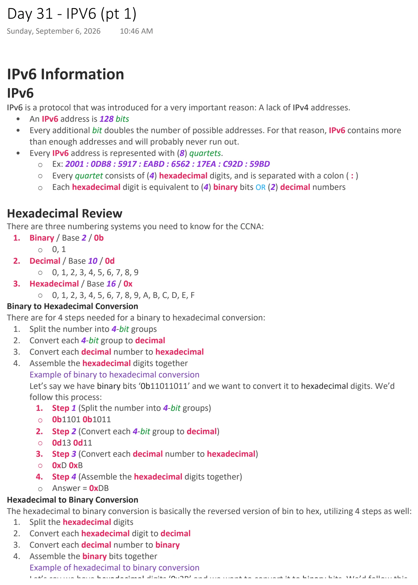
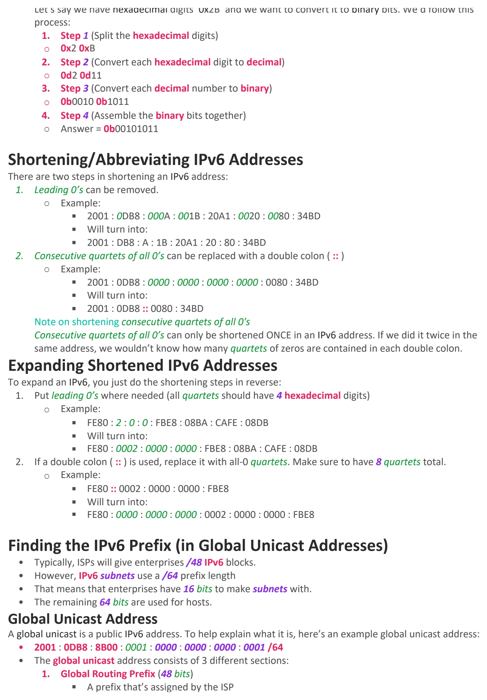
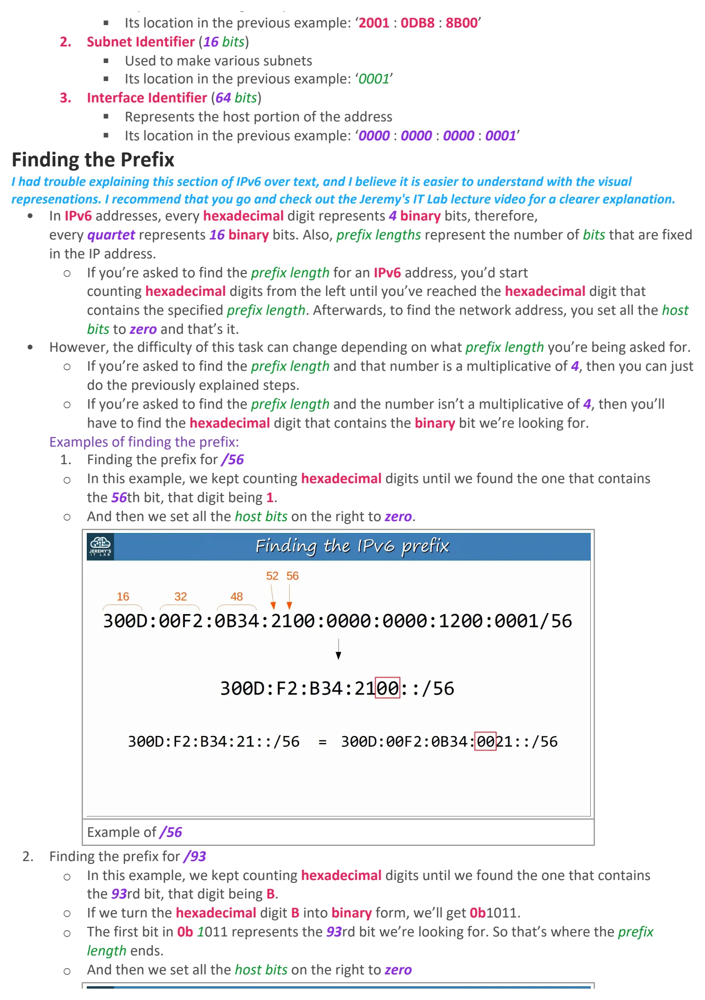
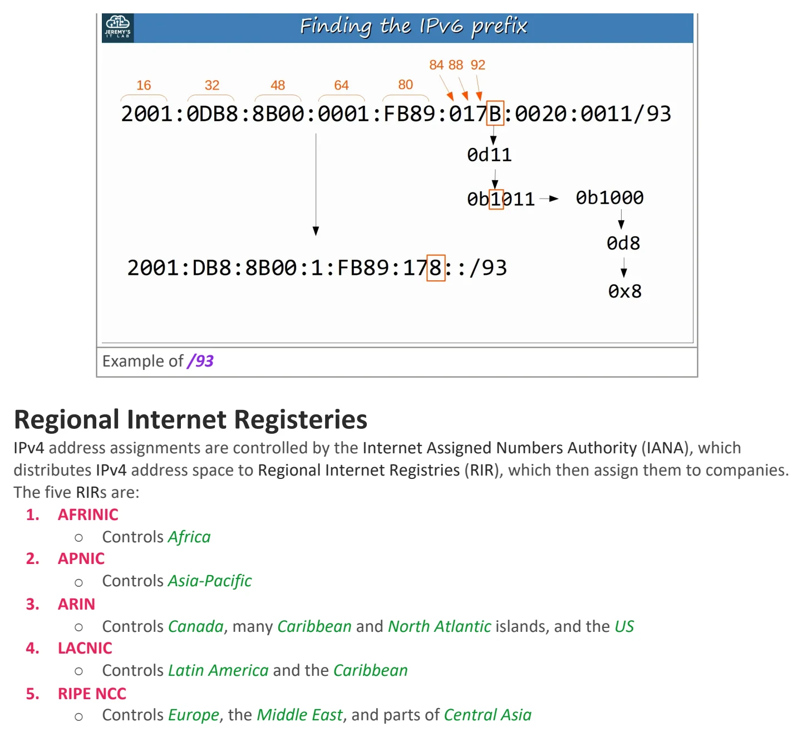

IPV6 (pt 1)
Download original PDF



Text view — IPV6 (pt 1)
Extracted from the original export. Diagrams and some formatting appear in the notes above.
Day 31 - IPV6 (pt 1) Sunday, September 6, 2026 10:46 AM IPv6 Information IPv6 IPv6 is a protocol that was introduced for a very important reason: A lack of IPv4 addresses. • An IPv6 address is 128 bits • Every additional bit doubles the number of possible addresses. For that reason, IPv6 contains more than enough addresses and will probably never run out. • Every IPv6 address is represented with (8) quartets. ○ Ex: 2001 : 0DB8 : 5917 : EABD : 6562 : 17EA : C92D : 59BD ○ Every quartet consists of (4) hexadecimal digits, and is separated with a colon ( : ) ○ Each hexadecimal digit is equivalent to (4) binary bits OR (2) decimal numbers Hexadecimal Review There are three numbering systems you need to know for the CCNA: 1. Binary / Base 2 / 0b ○ 0, 1 2. Decimal / Base 10 / 0d ○ 0, 1, 2, 3, 4, 5, 6, 7, 8, 9 3. Hexadecimal / Base 16 / 0x ○ 0, 1, 2, 3, 4, 5, 6, 7, 8, 9, A, B, C, D, E, F Binary to Hexadecimal Conversion There are for 4 steps needed for a binary to hexadecimal conversion: 1. Split the number into 4-bit groups 2. Convert each 4-bit group to decimal 3. Convert each decimal number to hexadecimal 4. Assemble the hexadecimal digits together Example of binary to hexadecimal conversion Let’s say we have binary bits ‘0b11011011’ and we want to convert it to hexadecimal digits. We’d follow this process: 1. Step 1 (Split the number into 4-bit groups) ○ 0b1101 0b1011 2. Step 2 (Convert each 4-bit group to decimal) ○ 0d13 0d11 3. Step 3 (Convert each decimal number to hexadecimal) ○ 0xD 0xB 4. Step 4 (Assemble the hexadecimal digits together) ○ Answer = 0xDB Hexadecimal to Binary Conversion The hexadecimal to binary conversion is basically the reversed version of bin to hex, utilizing 4 steps as well: 1. Split the hexadecimal digits 2. Convert each hexadecimal digit to decimal 3. Convert each decimal number to binary 4. Assemble the binary bits together Example of hexadecimal to binary conversion Let’s say we have hexadecimal digits ‘0x2B’ and we want to convert it to binary bits. We’d follow this process: 1. Step 1 (Split the hexadecimal digits) ○ 0x2 0xB 2. Step 2 (Convert each hexadecimal digit to decimal) ○ 0d2 0d11 3. Step 3 (Convert each decimal number to binary) ○ 0b0010 0b1011 4. Step 4 (Assemble the binary bits together) ○ Answer = 0b00101011 Shortening/Abbreviating IPv6 Addresses There are two steps in shortening an IPv6 address: 1. Leading 0’s can be removed. ○ Example: § 2001 : 0DB8 : 000A : 001B : 20A1 : 0020 : 0080 : 34BD § Will turn into: § 2001 : DB8 : A : 1B : 20A1 : 20 : 80 : 34BD 2. Consecutive quartets of all 0’s can be replaced with a double colon ( :: ) ○ Example: § 2001 : 0DB8 : 0000 : 0000 : 0000 : 0000 : 0080 : 34BD § Will turn into: § 2001 : 0DB8 :: 0080 : 34BD Note on shortening consecutive quartets of all 0's Consecutive quartets of all 0’s can only be shortened ONCE in an IPv6 address. If we did it twice in the same address, we wouldn’t know how many quartets of zeros are contained in each double colon. Expanding Shortened IPv6 Addresses To expand an IPv6, you just do the shortening steps in reverse: 1. Put leading 0’s where needed (all quartets should have 4 hexadecimal digits) ○ Example: § FE80 : 2 : 0 : 0 : FBE8 : 08BA : CAFE : 08DB § Will turn into: § FE80 : 0002 : 0000 : 0000 : FBE8 : 08BA : CAFE : 08DB 2. If a double colon ( :: ) is used, replace it with all-0 quartets. Make sure to have 8 quartets total. ○ Example: § FE80 :: 0002 : 0000 : 0000 : FBE8 § Will turn into: § FE80 : 0000 : 0000 : 0000 : 0002 : 0000 : 0000 : FBE8 Finding the IPv6 Prefix (in Global Unicast Addresses) • Typically, ISPs will give enterprises /48 IPv6 blocks. • However, IPv6 subnets use a /64 prefix length • That means that enterprises have 16 bits to make subnets with. • The remaining 64 bits are used for hosts. Global Unicast Address A global unicast is a public IPv6 address. To help explain what it is, here’s an example global unicast address: • 2001 : 0DB8 : 8B00 : 0001 : 0000 : 0000 : 0000 : 0001 /64 • The global unicast address consists of 3 different sections: 1. Global Routing Prefix (48 bits) § A prefix that’s assigned by the ISP § Its location in the previous example: ‘2001 : 0DB8 : 8B00’ 2. Subnet Identifier (16 bits) § Used to make various subnets § Its location in the previous example: ‘0001’ 3. Interface Identifier (64 bits) § Represents the host portion of the address § Its location in the previous example: ‘0000 : 0000 : 0000 : 0001’ Finding the Prefix I had trouble explaining this section of IPv6 over text, and I believe it is easier to understand with the visual represenations. I recommend that you go and check out the Jeremy's IT Lab lecture video for a clearer explanation. • In IPv6 addresses, every hexadecimal digit represents 4 binary bits, therefore, every quartet represents 16 binary bits. Also, prefix lengths represent the number of bits that are fixed in the IP address. ○ If you’re asked to find the prefix length for an IPv6 address, you’d start counting hexadecimal digits from the left until you’ve reached the hexadecimal digit that contains the specified prefix length. Afterwards, to find the network address, you set all the host bits to zero and that’s it. • However, the difficulty of this task can change depending on what prefix length you’re being asked for. ○ If you’re asked to find the prefix length and that number is a multiplicative of 4, then you can just do the previously explained steps. ○ If you’re asked to find the prefix length and the number isn’t a multiplicative of 4, then you’ll have to find the hexadecimal digit that contains the binary bit we’re looking for. Examples of finding the prefix: 1. Finding the prefix for /56 ○ In this example, we kept counting hexadecimal digits until we found the one that contains the 56th bit, that digit being 1. ○ And then we set all the host bits on the right to zero. Example of /56 2. Finding the prefix for /93 ○ In this example, we kept counting hexadecimal digits until we found the one that contains the 93rd bit, that digit being B. ○ If we turn the hexadecimal digit B into binary form, we’ll get 0b1011. ○ The first bit in 0b 1011 represents the 93rd bit we’re looking for. So that’s where the prefix length ends. ○ And then we set all the host bits on the right to zero Example of /93 Regional Internet Registeries IPv4 address assignments are controlled by the Internet Assigned Numbers Authority (IANA), which distributes IPv4 address space to Regional Internet Registries (RIR), which then assign them to companies. The five RIRs are: 1. AFRINIC ○ Controls Africa 2. APNIC ○ Controls Asia-Pacific 3. ARIN ○ Controls Canada, many Caribbean and North Atlantic islands, and the US 4. LACNIC ○ Controls Latin America and the Caribbean 5. RIPE NCC ○ Controls Europe, the Middle East, and parts of Central Asia Day 31 - IPV6 (pt 1) Sunday, September 6, 2026 10:46 AM IPv6 Information IPv6 IPv6 is a protocol that was introduced for a very important reason: A lack of IPv4 addresses. • An IPv6 address is 128 bits • Every additional bit doubles the number of possible addresses. For that reason, IPv6 contains more than enough addresses and will probably never run out. • Every IPv6 address is represented with (8) quartets. ○ Ex: 2001 : 0DB8 : 5917 : EABD : 6562 : 17EA : C92D : 59BD ○ Every quartet consists of (4) hexadecimal digits, and is separated with a colon ( : ) ○ Each hexadecimal digit is equivalent to (4) binary bits OR (2) decimal numbers Hexadecimal Review There are three numbering systems you need to know for the CCNA: 1. Binary / Base 2 / 0b ○ 0, 1 2. Decimal / Base 10 / 0d ○ 0, 1, 2, 3, 4, 5, 6, 7, 8, 9 3. Hexadecimal / Base 16 / 0x ○ 0, 1, 2, 3, 4, 5, 6, 7, 8, 9, A, B, C, D, E, F Binary to Hexadecimal Conversion There are for 4 steps needed for a binary to hexadecimal conversion: 1. Split the number into 4-bit groups 2. Convert each 4-bit group to decimal 3. Convert each decimal number to hexadecimal 4. Assemble the hexadecimal digits together Example of binary to hexadecimal conversion Let’s say we have binary bits ‘0b11011011’ and we want to convert it to hexadecimal digits. We’d follow this process: 1. Step 1 (Split the number into 4-bit groups) ○ 0b1101 0b1011 2. Step 2 (Convert each 4-bit group to decimal) ○ 0d13 0d11 3. Step 3 (Convert each decimal number to hexadecimal) ○ 0xD 0xB 4. Step 4 (Assemble the hexadecimal digits together) ○ Answer = 0xDB Hexadecimal to Binary Conversion The hexadecimal to binary conversion is basically the reversed version of bin to hex, utilizing 4 steps as well: 1. Split the hexadecimal digits 2. Convert each hexadecimal digit to decimal 3. Convert each decimal number to binary 4. Assemble the binary bits together Example of hexadecimal to binary conversion Let’s say we have hexadecimal digits ‘0x2B’ and we want to convert it to binary bits. We’d follow this process: 1. Step 1 (Split the hexadecimal digits) ○ 0x2 0xB 2. Step 2 (Convert each hexadecimal digit to decimal) ○ 0d2 0d11 3. Step 3 (Convert each decimal number to binary) ○ 0b0010 0b1011 4. Step 4 (Assemble the binary bits together) ○ Answer = 0b00101011 Shortening/Abbreviating IPv6 Addresses There are two steps in shortening an IPv6 address: 1. Leading 0’s can be removed. ○ Example: § 2001 : 0DB8 : 000A : 001B : 20A1 : 0020 : 0080 : 34BD § Will turn into: § 2001 : DB8 : A : 1B : 20A1 : 20 : 80 : 34BD 2. Consecutive quartets of all 0’s can be replaced with a double colon ( :: ) ○ Example: § 2001 : 0DB8 : 0000 : 0000 : 0000 : 0000 : 0080 : 34BD § Will turn into: § 2001 : 0DB8 :: 0080 : 34BD Note on shortening consecutive quartets of all 0's Consecutive quartets of all 0’s can only be shortened ONCE in an IPv6 address. If we did it twice in the same address, we wouldn’t know how many quartets of zeros are contained in each double colon. Expanding Shortened IPv6 Addresses To expand an IPv6, you just do the shortening steps in reverse: 1. Put leading 0’s where needed (all quartets should have 4 hexadecimal digits) ○ Example: § FE80 : 2 : 0 : 0 : FBE8 : 08BA : CAFE : 08DB § Will turn into: § FE80 : 0002 : 0000 : 0000 : FBE8 : 08BA : CAFE : 08DB 2. If a double colon ( :: ) is used, replace it with all-0 quartets. Make sure to have 8 quartets total. ○ Example: § FE80 :: 0002 : 0000 : 0000 : FBE8 § Will turn into: § FE80 : 0000 : 0000 : 0000 : 0002 : 0000 : 0000 : FBE8 Finding the IPv6 Prefix (in Global Unicast Addresses) • Typically, ISPs will give enterprises /48 IPv6 blocks. • However, IPv6 subnets use a /64 prefix length • That means that enterprises have 16 bits to make subnets with. • The remaining 64 bits are used for hosts. Global Unicast Address A global unicast is a public IPv6 address. To help explain what it is, here’s an example global unicast address: • 2001 : 0DB8 : 8B00 : 0001 : 0000 : 0000 : 0000 : 0001 /64 • The global unicast address consists of 3 different sections: 1. Global Routing Prefix (48 bits) § A prefix that’s assigned by the ISP § Its location in the previous example: ‘2001 : 0DB8 : 8B00’ 2. Subnet Identifier (16 bits) § Used to make various subnets § Its location in the previous example: ‘0001’ 3. Interface Identifier (64 bits) § Represents the host portion of the address § Its location in the previous example: ‘0000 : 0000 : 0000 : 0001’ Finding the Prefix I had trouble explaining this section of IPv6 over text, and I believe it is easier to understand with the visual represenations. I recommend that you go and check out the Jeremy's IT Lab lecture video for a clearer explanation. • In IPv6 addresses, every hexadecimal digit represents 4 binary bits, therefore, every quartet represents 16 binary bits. Also, prefix lengths represent the number of bits that are fixed in the IP address. ○ If you’re asked to find the prefix length for an IPv6 address, you’d start counting hexadecimal digits from the left until you’ve reached the hexadecimal digit that contains the specified prefix length. Afterwards, to find the network address, you set all the host bits to zero and that’s it. • However, the difficulty of this task can change depending on what prefix length you’re being asked for. ○ If you’re asked to find the prefix length and that number is a multiplicative of 4, then you can just do the previously explained steps. ○ If you’re asked to find the prefix length and the number isn’t a multiplicative of 4, then you’ll have to find the hexadecimal digit that contains the binary bit we’re looking for. Examples of finding the prefix: 1. Finding the prefix for /56 ○ In this example, we kept counting hexadecimal digits until we found the one that contains the 56th bit, that digit being 1. ○ And then we set all the host bits on the right to zero. Example of /56 2. Finding the prefix for /93 ○ In this example, we kept counting hexadecimal digits until we found the one that contains the 93rd bit, that digit being B. ○ If we turn the hexadecimal digit B into binary form, we’ll get 0b1011. ○ The first bit in 0b 1011 represents the 93rd bit we’re looking for. So that’s where the prefix length ends. ○ And then we set all the host bits on the right to zero Example of /93 Regional Internet Registeries IPv4 address assignments are controlled by the Internet Assigned Numbers Authority (IANA), which distributes IPv4 address space to Regional Internet Registries (RIR), which then assign them to companies. The five RIRs are: 1. AFRINIC ○ Controls Africa 2. APNIC ○ Controls Asia-Pacific 3. ARIN ○ Controls Canada, many Caribbean and North Atlantic islands, and the US 4. LACNIC ○ Controls Latin America and the Caribbean 5. RIPE NCC ○ Controls Europe, the Middle East, and parts of Central Asia Day 31 - IPV6 (pt 1) Sunday, September 6, 2026 10:46 AM IPv6 Information IPv6 IPv6 is a protocol that was introduced for a very important reason: A lack of IPv4 addresses. • An IPv6 address is 128 bits • Every additional bit doubles the number of possible addresses. For that reason, IPv6 contains more than enough addresses and will probably never run out. • Every IPv6 address is represented with (8) quartets. ○ Ex: 2001 : 0DB8 : 5917 : EABD : 6562 : 17EA : C92D : 59BD ○ Every quartet consists of (4) hexadecimal digits, and is separated with a colon ( : ) ○ Each hexadecimal digit is equivalent to (4) binary bits OR (2) decimal numbers Hexadecimal Review There are three numbering systems you need to know for the CCNA: 1. Binary / Base 2 / 0b ○ 0, 1 2. Decimal / Base 10 / 0d ○ 0, 1, 2, 3, 4, 5, 6, 7, 8, 9 3. Hexadecimal / Base 16 / 0x ○ 0, 1, 2, 3, 4, 5, 6, 7, 8, 9, A, B, C, D, E, F Binary to Hexadecimal Conversion There are for 4 steps needed for a binary to hexadecimal conversion: 1. Split the number into 4-bit groups 2. Convert each 4-bit group to decimal 3. Convert each decimal number to hexadecimal 4. Assemble the hexadecimal digits together Example of binary to hexadecimal conversion Let’s say we have binary bits ‘0b11011011’ and we want to convert it to hexadecimal digits. We’d follow this process: 1. Step 1 (Split the number into 4-bit groups) ○ 0b1101 0b1011 2. Step 2 (Convert each 4-bit group to decimal) ○ 0d13 0d11 3. Step 3 (Convert each decimal number to hexadecimal) ○ 0xD 0xB 4. Step 4 (Assemble the hexadecimal digits together) ○ Answer = 0xDB Hexadecimal to Binary Conversion The hexadecimal to binary conversion is basically the reversed version of bin to hex, utilizing 4 steps as well: 1. Split the hexadecimal digits 2. Convert each hexadecimal digit to decimal 3. Convert each decimal number to binary 4. Assemble the binary bits together Example of hexadecimal to binary conversion Let’s say we have hexadecimal digits ‘0x2B’ and we want to convert it to binary bits. We’d follow this process: 1. Step 1 (Split the hexadecimal digits) ○ 0x2 0xB 2. Step 2 (Convert each hexadecimal digit to decimal) ○ 0d2 0d11 3. Step 3 (Convert each decimal number to binary) ○ 0b0010 0b1011 4. Step 4 (Assemble the binary bits together) ○ Answer = 0b00101011 Shortening/Abbreviating IPv6 Addresses There are two steps in shortening an IPv6 address: 1. Leading 0’s can be removed. ○ Example: § 2001 : 0DB8 : 000A : 001B : 20A1 : 0020 : 0080 : 34BD § Will turn into: § 2001 : DB8 : A : 1B : 20A1 : 20 : 80 : 34BD 2. Consecutive quartets of all 0’s can be replaced with a double colon ( :: ) ○ Example: § 2001 : 0DB8 : 0000 : 0000 : 0000 : 0000 : 0080 : 34BD § Will turn into: § 2001 : 0DB8 :: 0080 : 34BD Note on shortening consecutive quartets of all 0's Consecutive quartets of all 0’s can only be shortened ONCE in an IPv6 address. If we did it twice in the same address, we wouldn’t know how many quartets of zeros are contained in each double colon. Expanding Shortened IPv6 Addresses To expand an IPv6, you just do the shortening steps in reverse: 1. Put leading 0’s where needed (all quartets should have 4 hexadecimal digits) ○ Example: § FE80 : 2 : 0 : 0 : FBE8 : 08BA : CAFE : 08DB § Will turn into: § FE80 : 0002 : 0000 : 0000 : FBE8 : 08BA : CAFE : 08DB 2. If a double colon ( :: ) is used, replace it with all-0 quartets. Make sure to have 8 quartets total. ○ Example: § FE80 :: 0002 : 0000 : 0000 : FBE8 § Will turn into: § FE80 : 0000 : 0000 : 0000 : 0002 : 0000 : 0000 : FBE8 Finding the IPv6 Prefix (in Global Unicast Addresses) • Typically, ISPs will give enterprises /48 IPv6 blocks. • However, IPv6 subnets use a /64 prefix length • That means that enterprises have 16 bits to make subnets with. • The remaining 64 bits are used for hosts. Global Unicast Address A global unicast is a public IPv6 address. To help explain what it is, here’s an example global unicast address: • 2001 : 0DB8 : 8B00 : 0001 : 0000 : 0000 : 0000 : 0001 /64 • The global unicast address consists of 3 different sections: 1. Global Routing Prefix (48 bits) § A prefix that’s assigned by the ISP § Its location in the previous example: ‘2001 : 0DB8 : 8B00’ 2. Subnet Identifier (16 bits) § Used to make various subnets § Its location in the previous example: ‘0001’ 3. Interface Identifier (64 bits) § Represents the host portion of the address § Its location in the previous example: ‘0000 : 0000 : 0000 : 0001’ Finding the Prefix I had trouble explaining this section of IPv6 over text, and I believe it is easier to understand with the visual represenations. I recommend that you go and check out the Jeremy's IT Lab lecture video for a clearer explanation. • In IPv6 addresses, every hexadecimal digit represents 4 binary bits, therefore, every quartet represents 16 binary bits. Also, prefix lengths represent the number of bits that are fixed in the IP address. ○ If you’re asked to find the prefix length for an IPv6 address, you’d start counting hexadecimal digits from the left until you’ve reached the hexadecimal digit that contains the specified prefix length. Afterwards, to find the network address, you set all the host bits to zero and that’s it. • However, the difficulty of this task can change depending on what prefix length you’re being asked for. ○ If you’re asked to find the prefix length and that number is a multiplicative of 4, then you can just do the previously explained steps. ○ If you’re asked to find the prefix length and the number isn’t a multiplicative of 4, then you’ll have to find the hexadecimal digit that contains the binary bit we’re looking for. Examples of finding the prefix: 1. Finding the prefix for /56 ○ In this example, we kept counting hexadecimal digits until we found the one that contains the 56th bit, that digit being 1. ○ And then we set all the host bits on the right to zero. Example of /56 2. Finding the prefix for /93 ○ In this example, we kept counting hexadecimal digits until we found the one that contains the 93rd bit, that digit being B. ○ If we turn the hexadecimal digit B into binary form, we’ll get 0b1011. ○ The first bit in 0b 1011 represents the 93rd bit we’re looking for. So that’s where the prefix length ends. ○ And then we set all the host bits on the right to zero Example of /93 Regional Internet Registeries IPv4 address assignments are controlled by the Internet Assigned Numbers Authority (IANA), which distributes IPv4 address space to Regional Internet Registries (RIR), which then assign them to companies. The five RIRs are: 1. AFRINIC ○ Controls Africa 2. APNIC ○ Controls Asia-Pacific 3. ARIN ○ Controls Canada, many Caribbean and North Atlantic islands, and the US 4. LACNIC ○ Controls Latin America and the Caribbean 5. RIPE NCC ○ Controls Europe, the Middle East, and parts of Central Asia Day 31 - IPV6 (pt 1) Sunday, September 6, 2026 10:46 AM IPv6 Information IPv6 IPv6 is a protocol that was introduced for a very important reason: A lack of IPv4 addresses. • An IPv6 address is 128 bits • Every additional bit doubles the number of possible addresses. For that reason, IPv6 contains more than enough addresses and will probably never run out. • Every IPv6 address is represented with (8) quartets. ○ Ex: 2001 : 0DB8 : 5917 : EABD : 6562 : 17EA : C92D : 59BD ○ Every quartet consists of (4) hexadecimal digits, and is separated with a colon ( : ) ○ Each hexadecimal digit is equivalent to (4) binary bits OR (2) decimal numbers Hexadecimal Review There are three numbering systems you need to know for the CCNA: 1. Binary / Base 2 / 0b ○ 0, 1 2. Decimal / Base 10 / 0d ○ 0, 1, 2, 3, 4, 5, 6, 7, 8, 9 3. Hexadecimal / Base 16 / 0x ○ 0, 1, 2, 3, 4, 5, 6, 7, 8, 9, A, B, C, D, E, F Binary to Hexadecimal Conversion There are for 4 steps needed for a binary to hexadecimal conversion: 1. Split the number into 4-bit groups 2. Convert each 4-bit group to decimal 3. Convert each decimal number to hexadecimal 4. Assemble the hexadecimal digits together Example of binary to hexadecimal conversion Let’s say we have binary bits ‘0b11011011’ and we want to convert it to hexadecimal digits. We’d follow this process: 1. Step 1 (Split the number into 4-bit groups) ○ 0b1101 0b1011 2. Step 2 (Convert each 4-bit group to decimal) ○ 0d13 0d11 3. Step 3 (Convert each decimal number to hexadecimal) ○ 0xD 0xB 4. Step 4 (Assemble the hexadecimal digits together) ○ Answer = 0xDB Hexadecimal to Binary Conversion The hexadecimal to binary conversion is basically the reversed version of bin to hex, utilizing 4 steps as well: 1. Split the hexadecimal digits 2. Convert each hexadecimal digit to decimal 3. Convert each decimal number to binary 4. Assemble the binary bits together Example of hexadecimal to binary conversion Let’s say we have hexadecimal digits ‘0x2B’ and we want to convert it to binary bits. We’d follow this process: 1. Step 1 (Split the hexadecimal digits) ○ 0x2 0xB 2. Step 2 (Convert each hexadecimal digit to decimal) ○ 0d2 0d11 3. Step 3 (Convert each decimal number to binary) ○ 0b0010 0b1011 4. Step 4 (Assemble the binary bits together) ○ Answer = 0b00101011 Shortening/Abbreviating IPv6 Addresses There are two steps in shortening an IPv6 address: 1. Leading 0’s can be removed. ○ Example: § 2001 : 0DB8 : 000A : 001B : 20A1 : 0020 : 0080 : 34BD § Will turn into: § 2001 : DB8 : A : 1B : 20A1 : 20 : 80 : 34BD 2. Consecutive quartets of all 0’s can be replaced with a double colon ( :: ) ○ Example: § 2001 : 0DB8 : 0000 : 0000 : 0000 : 0000 : 0080 : 34BD § Will turn into: § 2001 : 0DB8 :: 0080 : 34BD Note on shortening consecutive quartets of all 0's Consecutive quartets of all 0’s can only be shortened ONCE in an IPv6 address. If we did it twice in the same address, we wouldn’t know how many quartets of zeros are contained in each double colon. Expanding Shortened IPv6 Addresses To expand an IPv6, you just do the shortening steps in reverse: 1. Put leading 0’s where needed (all quartets should have 4 hexadecimal digits) ○ Example: § FE80 : 2 : 0 : 0 : FBE8 : 08BA : CAFE : 08DB § Will turn into: § FE80 : 0002 : 0000 : 0000 : FBE8 : 08BA : CAFE : 08DB 2. If a double colon ( :: ) is used, replace it with all-0 quartets. Make sure to have 8 quartets total. ○ Example: § FE80 :: 0002 : 0000 : 0000 : FBE8 § Will turn into: § FE80 : 0000 : 0000 : 0000 : 0002 : 0000 : 0000 : FBE8 Finding the IPv6 Prefix (in Global Unicast Addresses) • Typically, ISPs will give enterprises /48 IPv6 blocks. • However, IPv6 subnets use a /64 prefix length • That means that enterprises have 16 bits to make subnets with. • The remaining 64 bits are used for hosts. Global Unicast Address A global unicast is a public IPv6 address. To help explain what it is, here’s an example global unicast address: • 2001 : 0DB8 : 8B00 : 0001 : 0000 : 0000 : 0000 : 0001 /64 • The global unicast address consists of 3 different sections: 1. Global Routing Prefix (48 bits) § A prefix that’s assigned by the ISP § Its location in the previous example: ‘2001 : 0DB8 : 8B00’ 2. Subnet Identifier (16 bits) § Used to make various subnets § Its location in the previous example: ‘0001’ 3. Interface Identifier (64 bits) § Represents the host portion of the address § Its location in the previous example: ‘0000 : 0000 : 0000 : 0001’ Finding the Prefix I had trouble explaining this section of IPv6 over text, and I believe it is easier to understand with the visual represenations. I recommend that you go and check out the Jeremy's IT Lab lecture video for a clearer explanation. • In IPv6 addresses, every hexadecimal digit represents 4 binary bits, therefore, every quartet represents 16 binary bits. Also, prefix lengths represent the number of bits that are fixed in the IP address. ○ If you’re asked to find the prefix length for an IPv6 address, you’d start counting hexadecimal digits from the left until you’ve reached the hexadecimal digit that contains the specified prefix length. Afterwards, to find the network address, you set all the host bits to zero and that’s it. • However, the difficulty of this task can change depending on what prefix length you’re being asked for. ○ If you’re asked to find the prefix length and that number is a multiplicative of 4, then you can just do the previously explained steps. ○ If you’re asked to find the prefix length and the number isn’t a multiplicative of 4, then you’ll have to find the hexadecimal digit that contains the binary bit we’re looking for. Examples of finding the prefix: 1. Finding the prefix for /56 ○ In this example, we kept counting hexadecimal digits until we found the one that contains the 56th bit, that digit being 1. ○ And then we set all the host bits on the right to zero. Example of /56 2. Finding the prefix for /93 ○ In this example, we kept counting hexadecimal digits until we found the one that contains the 93rd bit, that digit being B. ○ If we turn the hexadecimal digit B into binary form, we’ll get 0b1011. ○ The first bit in 0b 1011 represents the 93rd bit we’re looking for. So that’s where the prefix length ends. ○ And then we set all the host bits on the right to zero Example of /93 Regional Internet Registeries IPv4 address assignments are controlled by the Internet Assigned Numbers Authority (IANA), which distributes IPv4 address space to Regional Internet Registries (RIR), which then assign them to companies. The five RIRs are: 1. AFRINIC ○ Controls Africa 2. APNIC ○ Controls Asia-Pacific 3. ARIN ○ Controls Canada, many Caribbean and North Atlantic islands, and the US 4. LACNIC ○ Controls Latin America and the Caribbean 5. RIPE NCC ○ Controls Europe, the Middle East, and parts of Central Asia